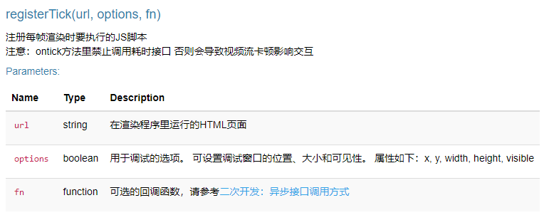
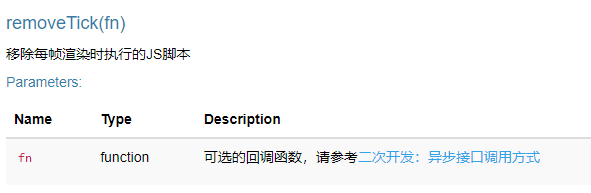
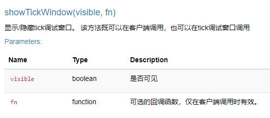
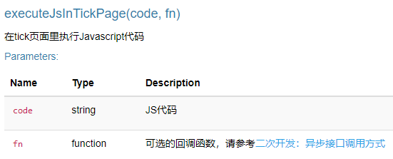
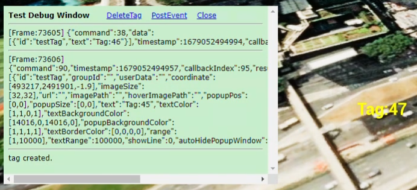

DigitalTwinAPI之tick功能使用说明
2023.03.17
一、功能简介
tick功能提供了一种高性能的DigitalTwinAPI接口调用方式。
常规的DigitalTwinAPI调用流程是这样的：客户端调用DigitalTwinAPI（通过网络传输），后台渲染进程接收命令，然后进行异步处理。这样就有几个方面的延迟：
（1）客户端的异步等待（命令发送后等待返回结果）
（2）网络传输（通过WebRTC）
（3）后台渲染进程的线程切换（接收线程收到数据后，投递到执行线程，执行线程处理后投递到发送线程）
通过上面的流程可以看到如果高频率的调用接口，性能是不会太高的。为了解决这一问题，实现了tick功能。通过tick功能，可以在渲染进程的每帧直接同步地调用DigitalTwinAPI，极大的提高了调用性能。
二、实现原理
tick功能是通过渲染进程内嵌的chrome浏览器内核（cef）执行JS脚本达到目的的。
调用注册接口后，进程会创建一个cef浏览器引擎，参数url将被设置为浏览器要显示的页面，在此页面内的DigitalTwinAPI调用，都是在同进程直接调用底层C++接口的，C++处理完成后，通过回调cef页面的Javascript函数来通知JS进行后续操作。 由于是在同一个进程内进行JS/C++互操作，所以性能非常高。
三、使用详解
1、接口说明
总共有4个方法：
registerTick

registerTick用于注册tick功能，注意：全局只能注册一个tick页面，多次registerTick，后面的tick功能会覆盖掉前面的。参数说明：
-
url
tick功能是通过一个独立的html页面实现的，此参数用来设置页面的地址。注意：由于是在后台渲染进程执行，所以页面地址必须是完整的网络路径或者服务器上的本地绝对路径， 不能传递相对路径。
-
options
用来设置是否显示调试页面，由于cef调试JS比较麻烦，所以可以设置此参数，将tick页面显示出来，将调试信息在页面上显示，这样就极大的方便了代码调试。options支持以下属性（可设置一个或多个属性，未设置的属性会使用默认值）：
-
x
调试窗口距离左上角的X偏移量。 默认值4
-
y
调试窗口距离左上角的Y偏移量。默认值4
-
width
调试窗口的宽度。默认值400
-
height
调试窗口的高度。默认值300
-
visible
是否可见。 默认为false（不可见）
-
removeTick

removeTick用于移除tick功能，调用此方法后，tick功能会停止。
showTickWindow

showTickWindow用于显示/隐藏调试窗口。此方法既可以在客户端调用，也可以在tick页面调用。
executeJsInTickPage

executeJsInTickPage用于实现客户端页面与tick页面的通信，通过此方法，可以在客户端页面执行tick页面的JS代码。
客户端页面和tick页面（服务器页面）之间可以双向通信，在tick页面调用ue.internal.postevent("str")，可以实现tick页面向客户端页面发送消息
2、tick页面说明
在tick页面里调用DigitalTwinAPI与常规调用有一些区别，主要体现在以下几个方面：
（1）DigitalTwinAPI初始化
var fdapi;
window.onload = function () {
fdapi = new DigitalTwinAPI();
}
一般在onload里初始化，与常规初始化不同，tick页面里初始化DigitalTwinAPI不需要传递任何参数。注意：这里也可以使用异步操作例如：
window.onload = async function () {
fdapi = new DigitalTwinAPI();
await fdapi.marker.delete(id);
await fdapi.marker.add(data);
}
（2）固定回调方法
function tick(frameNo) {
//业务代码
}
tick页面里的回调方法是被服务端执行的固定方法：tick(frameNo)。
-
tick
参数frameNo，是当前帧序号
是主页面调用registerTick后，渲染进程在每帧都会回调的方法。
如下示例代码：
<!doctype html>
<html>
<head>
<meta charset="utf-8">
<title>TICK-FollowVideoProjection</title>
<script type="text/javascript" src="../../ac_conf.js"></script>
<script type="text/javascript" src="../../ac.min.js"></script>
<style type="text/css">
body {
color: white;
background-color: black;
}
</style>
</head>
<body>
Tick Test
<hr>
<div id="info1"></div><br>
<div id="info2"></div>
</body>
</html>
<script>
window.onload = async function () {
new DigitalTwinAPI();
}
/**
* tick事件 监听每一帧操作
*/
async function tick(frame) {
//获取无人机每一帧实时位置 注意：tick方法里禁止调用耗时接口 否则会导致视频流卡顿影响交互
let resultStr = await fdapi.customObject.get('co1');
//反序列化
let result = JSON.parse(resultStr);
//调试显示代码
//document.getElementById('info').innerText = `[Frame:${frame}] ` + JSON.stringify(result);
//当前每帧的车辆位置
let currentPos = result.data[0].location;
let currentRoa = result.data[0].rotation;
//显示无人机实时位置 朝向
document.getElementById('info1').innerText = "无人机实时位置: \n"+ currentPos;
document.getElementById('info2').innerText = "无人机实时朝向: \n"+ currentRoa;
if (result.command == CommandType.CustomObject_Get) {
//当前每帧的无人机位置
let location = result.data[0].location;
let rotation = result.data[0].rotation;
let vp1 = {
id: "vp1",
location: location,
rotation: [rotation[0] - 45, rotation[1], rotation[2]],
};
//根据无人机位置朝向更新视频投影
fdapi.videoProjection.update(vp1);
}
}
</script>
上面代码实现的功能是：每帧改变标签的值，然后获取该标签的信息，在tick页面上显示出来。代码运行效果：
